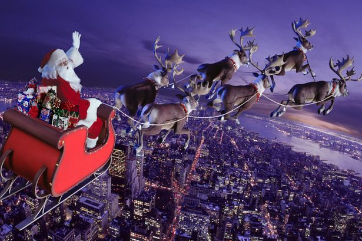
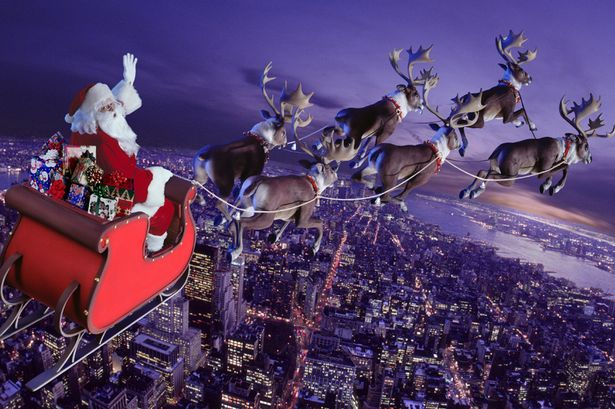

10 įdomių faktų apie Kalėdas
Neseniai praėjusios Kalėdos sukėlė daug emocijų visiems - ir vaikams, ir suaugusiems. Ta proga, noriu pasidalinti 10 įdomių faktų apie Kalėdas.
1. Kalėdinė daina „Jingle bells“ iš tiesų buvo parašyta ne Kalėdoms, o Padėkos dienai.
2. Coca-Cola buvo pirma kompanija, kuri Kalėdų senelio personažą panaudojo savo reklamoje.
3. 1886 m. Kalėdų dieną JAV buvo padovanota Laisvės statula ir ji yra laikoma didžiausia kalėdine dovana pasaulyje.
4. Jeigu Kalėdų senelis norėtų spėti pristatyti dovanas visiems pasaulio vaikams, jis turėtų keliauti greičiau negu šviesa.
5. 1901 m. JAV prezidentas T.Ruzveltas uždraudė Kalėdų eglutes.
6. Pasaulyje yra dvi salos, kurios yra pavadintos „Kalėdos“. Viena yra Ramiajame, o kita - Indijos vandenyne.
7. Japonai Kūčias švenčia greito maisto restoranuose „KFC“. Ši tradicija tokia populiari, kad dažnai vietą šiame restorane reikia rezervuoti net prieš kelis mėnesius.
8. Anksčiau tradicinis Kalėdų patiekalas Anglijoje buvo kiaulės galva ir garstyčios.
9. Iš pradžių Kalėdų eglutės buvo dekoruojamos vaisiais(daugiausiai obuoliais).
10. Kalėdiniu laikotarpiu kiekvieną sekundę yra parduodami maždaug 28 LEGO rinkiniai.
 

„Svarbu ne tai, kas po Kalėdų eglute. Svarbu kas aplink ją“ - Čarlis Braunas.
Šaltinis - https://thefactfile.org/interesting-facts-christmas/